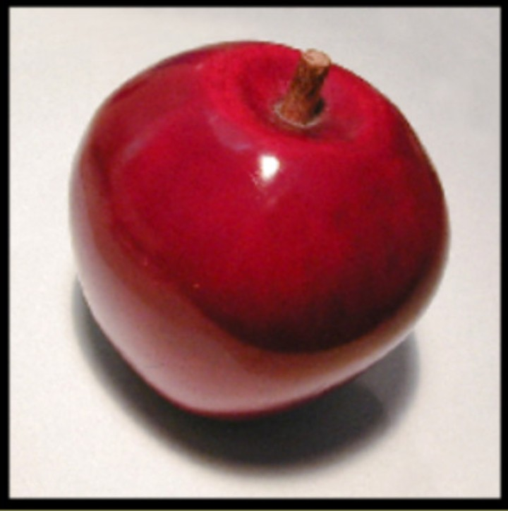

|  | Apples are Good for Health |
|---|---|
| Under most conditions, apple trees will set more fruit than needed for a full crop. Most apple cultivars will retain this heavy set of fruit throughout the growing season resulting in small, poorly colored, low quality fruit. Thinning is the removal of a portion of the crop before it matures on the tree to increase the marketability of the remaining fruit and to reduce the biennial bearing tendency of the tree. | |